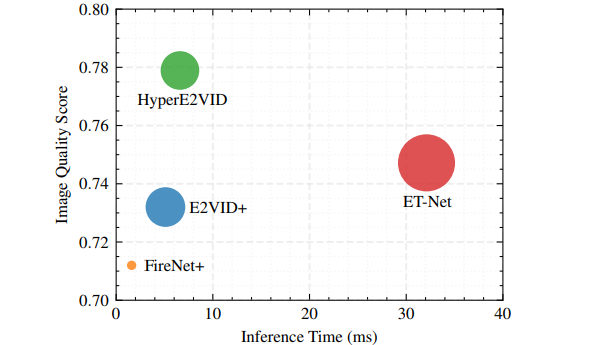
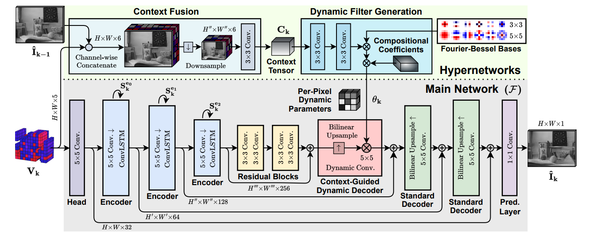
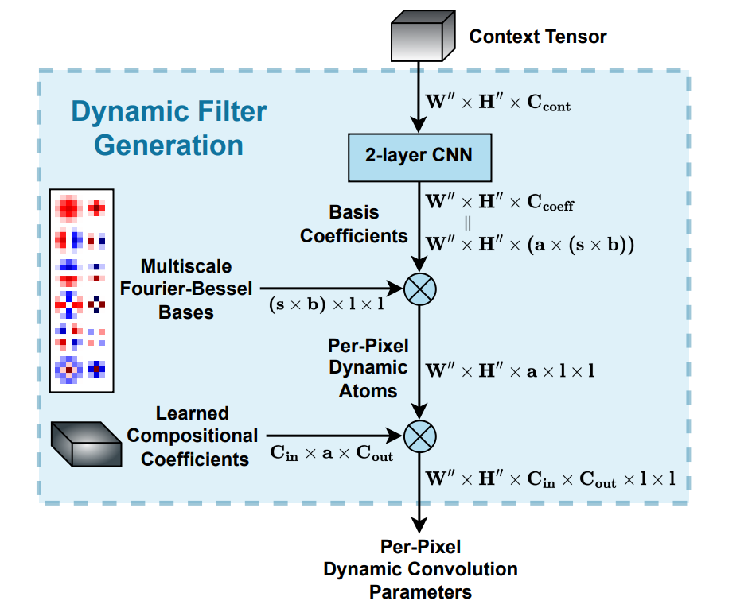
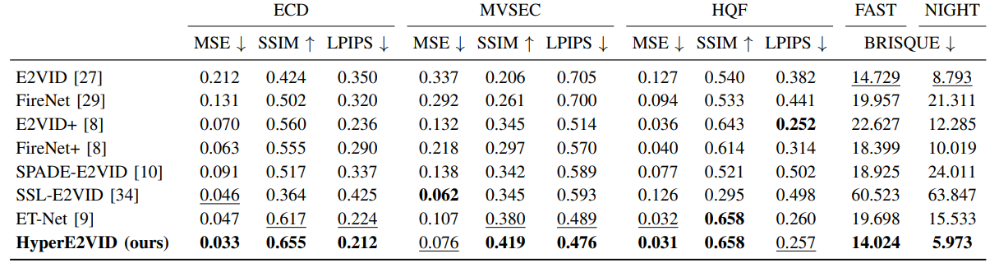
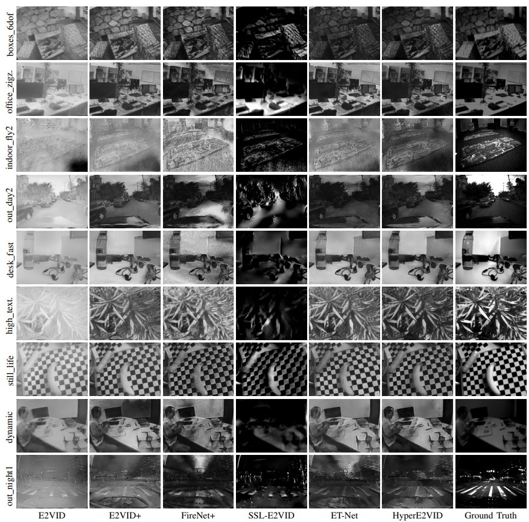
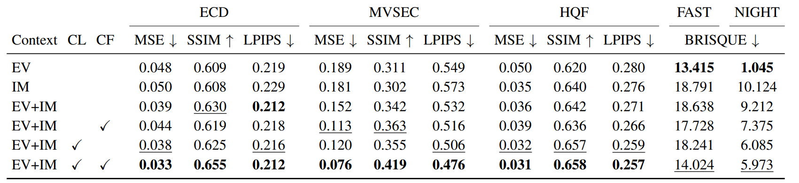
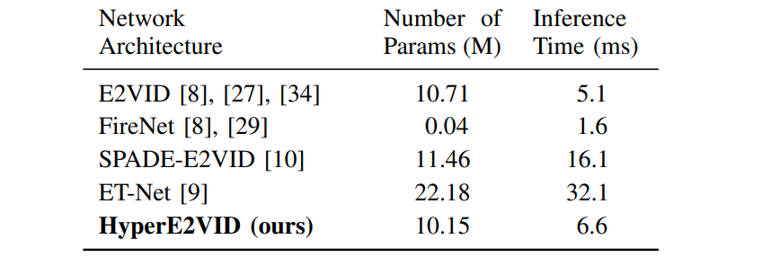

HyperE2VID:Improving Event-Based Video Reconstruction via Hypernetworks
HyperE2VID: Improving Event-Based Video Reconstruction via Hypernetworks
Abstract
没啥motivation，提出了HyperE2VID，使用hypernetworks和动态卷积（dynamic convolutions）来生成每像素的自适应filters，该滤波器由context fusion模块指导，该模块结合voxel grid和上一帧重建的信息，类似spade。还使用了课程学习策略（curriculum learning strategy）来使训练更robust。比ET-Net参数更少，性能更好。

Method
事件处理跟正常方法差别不大，但是进行了一点约束，使每个生成的图像只依赖于过去的事件。这样方法可以用于从相机中实时重构事件。用固定时间的voxel grid来表征事件，B=5。
HyperE2VID：
inference阶段，每个时间间隔重构一帧图像，主干网络类似E2VID，然后，用hypernetworks, dynamic convolutions, 和context fusion模块来增强网络，成为HyperE2VID。
下图为整体框架，由主网络F和生成动态参数部分的hyper网络构成。从输入到输出，主网络F由一个head层、三个循环编码器、两个残差块、一个context-guided dynamic encoder（CGDD），两个标准的decoder和prediction layer构成。hyper网络由dynamic filter generation（DFG）块和context fusion（CF）构成。为主网络的动态部分生成像素级dynamic filter参数。

写成公式就是：令为网络第k次的的循环状态，包括三个编码器的状态，其中，给定的状态和当前的voxel grid ，主网络计算当前的状态和预测的强度图像：
其中表示CGDD块卷积层的参数，由DFG block在推理时动态生成：
decoder部分的参数则需要利用当前voxel 和上一次的重构结果，context fusion（CF）block融合二者生成上下文张量，然后将其用作dynamic filter generation block（DFG）的输入，该方法基于二者的互补性，强度图像捕捉静态场景，事件捕捉快速运动。
skip connection用element-wise求和，每个卷积都用ReLU。
Head layer：一个卷积层， kernel大小为5，输入通道数5，输出通道数32，W，H不变。
Encoder blocks：一个卷积层和一个ConvLSTM构成，kernel为5，stride为2，下采样一般，通道数翻倍，ConvLSTM的核为3并保持其他。
Residual blocks：每个残差块由两个卷积层构成，kernel为3，保持wh和通道。
Context-Guided Dynamic Decoder（CGDD）block：包括bilinear上采样来增加空间维度，然后是动态卷积层，kernel为5x5，通道数减半。该卷积的参数由DFG block在inference阶段动态生成。
需要强调的是，所有动态参数都是逐像素生成，每个像素有一个单独的卷积核。这样的spatial adaptation是由于事件相机的像素彼此独立工作的事实motivated的，当场景的某些部分有更多运动时，像素的事件生成率更高，生成的voxel grid更密集。这样的设计能够根据不同的运动模式和事件速率来学习不同的滤波器。
Standard Decoder blocks：每个标准decoder由bilinear上采样和一个标准卷积构成，细节与上一层相同，参数在训练时学习，在推理时固定。
Prediction layer：kernel大小为1的标准卷积层，预测最终的强度图像，通道为1，不使用激活函数。
Dynamic Filter Generation (DFG) block：网络中关键的组成就是DFG，该block使用context tensor和CGDD的输出参数。context tensor 与动态卷积的输入有相同的wh。为了生成context tensor，我们使用context fusion机制来融合来自和的特征。
为了减少计算成本，在生成DFG时使用了两个滤波器分解步骤，首先将滤波器分解为动态生成的逐像素filter atoms，然后进一步将filter atoms分解为固定的multi-scale Fourier-Bessel bases。受ACDA启发，我们的方法生成了在空间上变化的高效的逐像素卷积，但与ACDA不同，我们的网络结构通过hyper网络单独生成动态参数，由context tensor引导。

上图为DFG的具体操作，将维度为的context tensor输入到2层CNN中，生成通道为的basis cofficient，用于之前生成的Multi-scale Fourier-Bessel Bases。这些bases由大小为的张量表示，其中s为scale的数量，b为每个scale上的Fourier-Bessel基的数量，l为生成动态参数的核的大小。将二者相乘，得到per-pixel dynamic atoms大小为，每个像素生成的atoms数为，因此得到的所有atoms可以用的张量来表示。
接下来 ，将大小为的组成系数张量与这些逐像素动态atoms相乘，这些系数在inference阶段是固定的，并在空间位置上共享，得到一个大小为的张量，作为per-pixel dynamic 卷积的参数。这里，和分别是动态卷积输入和输出的通道数，对于DFG block，我们设置，scale的数量为，这意味着我们使用和尺寸的Fourier-Bessel bases。对每个尺度，因此总共有个FB基，2层CNN的通道数为64，每个卷积层的kernel为3，用bn和tanh激活。CNN输出通道为，为每个dynamic atoms和FB基生成单独的coefficient。
Context Fusion (CF) block：生成的vg是个稀疏张量，只包含变化的信息，我们用CF模块来融合和，将二者在通道维concat，得到一个6通道的张量，对该张量下采样，匹配CGDD上动态卷积的输入维度，然后使用卷积生成32通道的context tensor。简单的设计。
Training Details：
训练损失跟reducing一样，用LPIPS和TC loss。训练时计算序列中每Ts个时间步的损失，并用截断时间反向传播算法计算梯度，阶段周期为Tt个时间步，设置可以减少内存需求加快训练过程。length为40，使用He初始化网络，，bs为10，训练400个epoch，学习率为0.001，优化器用Adam和AMSGrad。为了跟踪与分析，使用Weights & Biases。
在训练开始时，使用context fusion是不好的，不易学习有效的表示，尤其是早期阶段，因此，我们在训练时使用curriculum learning strategy(课程学习策略)，从上一张图像的gt 开始训练而不是重构图像，对于前100个epoch，逐渐从重构图像切换到真实图像，通过加权平均的方式。在100个epoch之后，用完整的context fusion继续训练，也就是：
这样的训练方式允许hypernet参数更robust的学习，用随机crop和flip做数据增强，crop：，flip：0.5，如e2vid，此外，我们采用了dynamic train-time noise增强，pause增强和hot-pixel增强，如reducing。
Experimental Analysis
训练集：reducing 280段2d esim
测试集：IJRR，整体跟reducing差不多，裁一些时间，参考evreal，用后半部分做快速的评估FAST，MVSEC，有无监督的指标，参考evreal。HQF
评价指标：MSE，SSIM，LPIPS，BRISQUE

HyperE2VID方法在大多数指标方面实现了最先进的性能。在ECD和MVSEC数据集上，它的性能大大优于第二好的方法ET-Net。在HQF数据集上，它提供的结果与现有方法相当或略好于现有方法。在涉及快速摄像机运动(fast)或夜间驾驶(night)的具有挑战性的场景中，它获得了最好的BRISQUE分数，超过了第二好的方法E2VID。这些结果证明了HyperE2VID方法的有效性，该方法可以产生感知上更令人愉悦和高保真的重建。
我们在图5中给出了ECD、MVSEC和HQF数据集的定性结果。

重建的视觉质量与定量结果基本一致。在这六种方法中，FireNet+和SSL-E2VID往往质量最低，视觉伪影突出，区域过暗。E2VID+的重建具有较少的伪影，特别是在HQF数据集的场景中。E2VID+还可以为MVSEC数据集的户外场景生成漂亮的图像。然而，它的重建通常是低对比度和模糊周围的边缘。ET-Net具有更好的对比度，但在无纹理区域和物体边缘周围有更多的伪影。HyperE2VID的重建具有高对比度和边缘锐利的特点。此外，无纹理的区域重建时artifacts较少。
Ablation Study：
我们进行消融研究来分析各种设计选择的有效性，包括所使用的上下文信息。具体来说，我们研究了仅使用事件上下文、仅使用图像上下文或同时使用事件和图像上下文的超网络，分别表示为EV、IM和EV+IM。为在EV+IM中，我们还研究了使用课程学习策略(CL)和卷积上下文融合(CF)的影响。当不使用CF时，我们按通道连接图像和事件张量，并对结果张量进行下采样，以匹配CGDD块中动态卷积的输入。在我们的实验中，我们研究了特定设计选择的影响，同时保持所有其他训练和评估设置不变。结果总结于下表。

我们的研究结果表明，利用事件和图像作为上下文信息(EV+IM)通常优于仅使用事件(EV)或仅使用图像(IM)，除了仅使用事件上下文外，在快速运动和夜间驾驶序列中表现更好。当同时使用事件和图像时(EV+IM)，仅结合上下文融合(CF)可以提高MVSEC数据集的性能。相反,仅结合课程学习策略(CL)可提高MVSEC和HQF数据集上的性能。将所有这些组成部分结合起来，就形成了我们所提出的HyperE2VID模型(最后一行)，它在ECD、MVSEC和HQF数据集上取得了最好的成绩，在FAST和NIGHT数据集上取得了第二好的成绩。
Computational Complexity：
计算复杂度：(1)模型参数个数，(2)推理时间。参数的数量是指示模型内存需求的重要指标，而推理时间是模型实时性能(可以获得的最大每秒帧数)的直接指标。为了测量推理时间，我们使用分辨率为240×180的数据，并在使用Quadro RTX的工作站上报告平均推理时间(以毫秒为单位)5000 GPU。我们在下表中给出了这些计算复杂度度量的结果。这里，模型参数的数量以百万为单位，推理时间以毫秒为单位。

在这里，可以看出我们的方法在精度和效率之间提供了很好的权衡。HyperE2VID是一个比ET-Net更小、更快的网络，同时生成的重建具有更好的视觉质量。另一方面，最小和最快的方法FireNet和FireNet+生成的重建图像的视觉质量明显较低。
Conclusion
在这项工作中，我们提出了HyperE2VID，这是一种新的动态网络架构，用于基于事件的视频重建，通过使用超网络和动态卷积来提高技术水平。我们的方法使用超网络生成自适应滤波器，超网络是在推理时间根据通过事件体素网格和先前重建的强度图像编码的场景上下文动态生成的，从而更有效地处理场景的静态和动态部分。在几个具有挑战性的数据集上的实验结果表明，HyperE2VID在视觉质量方面优于以前最先进的方法，同时减少了内存消耗和推理时间。我们的工作展示了动态网络架构和超网络在处理高度变化的事件数据方面的潜力，为未来在这一方向的研究开辟了可能性，针对更多的任务，如基于事件的光流估计。